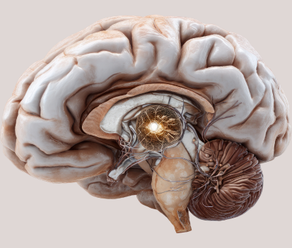

Endovascular neurointervention is an advanced, minimally invasive approach used to diagnose and treat complex disorders of the brain and spinal blood vessels. At AB Skin and Neuro Centre, Dr. Ranjith G, a leading interventional neurologist in Manikonda, provides state-of-the-art endovascular procedures for conditions such as stroke, aneurysms, and vascular malformations.
Using high-precision imaging guidance and catheter-based techniques, Dr. Ranjith performs targeted procedures to restore blood flow, treat vascular abnormalities, and prevent life-threatening neurological complications. His approach focuses on minimally invasive intervention, faster recovery, and improved neurological outcomes for patients.
Advanced Neurovascular Care
Modern endovascular techniques allow precise treatment of complex neurovascular conditions while avoiding major surgery and reducing recovery time.
- Accurate Diagnosis
- Targeted Treatment
- Minimally Invasive
- Improved Outcomes

Comprehensive Evaluation
Detailed neurological examination, advanced imaging, and vascular studies to identify the underlying neurovascular condition accurately.
Individualized Plan
Personalized endovascular treatment strategy using minimally invasive procedures to restore blood flow, treat vascular abnormalities, and prevent neurological complications.
Sub-Services in Endovascular Neurointervention
Digital Subtraction Angiography (DSA) – Advanced imaging technique used to visualize blood vessels in the brain and spine for accurate diagnosis and treatment planning.
Mechanical Thrombectomy – A life-saving procedure to remove blood clots from brain arteries in patients with acute ischemic stroke, restoring blood flow quickly.
Carotid Stenting – Minimally invasive placement of a stent in the carotid artery to treat narrowing and reduce the risk of stroke.
Intracranial Stenting – Endovascular procedure used to widen narrowed arteries inside the brain and improve cerebral blood circulation.
Aneurysm Coiling / Flow Diverter Stenting – Advanced techniques used to treat brain aneurysms by sealing the weakened vessel and preventing rupture.
AVM Embolisation – Procedure that blocks abnormal blood vessels in arteriovenous malformations (AVMs) to reduce bleeding risk and neurological complications.
Spinal Angiography – Specialized imaging used to evaluate spinal blood vessels and detect vascular abnormalities affecting the spinal cord.
Why Choose Dr. Ranjith for Endovascular Neurointervention
As an experienced interventional neurologist, Dr. Ranjith performs advanced catheter-based procedures with precision, ensuring safe treatment and optimal neurological outcomes.
01
Advanced Techniques
Cutting-edge endovascular procedures for complex neurovascular conditions.
02
Experienced Specialist
Over 14 years of expertise in neurological and interventional care.
03
Patient-Centered Care
Personalized treatment strategies designed for the best recovery outcomes.
Benefits of Endovascular Neurointervention
Patients benefit from minimally invasive treatment, faster recovery, reduced surgical risks, and improved neurological health through advanced endovascular care.
- Faster Recovery
- Reduced Surgical Risk
- Improved Blood Flow
- Better Neurological Outcomes
Frequently asked questions
Endovascular neurointervention is a minimally invasive procedure used to diagnose and treat blood vessel disorders of the brain and spine using catheter-based techniques.
It is commonly used to treat stroke, brain aneurysms, carotid artery blockages, arteriovenous malformations (AVMs), and other neurovascular conditions.
In many cases, endovascular procedures are less invasive, resulting in smaller incisions, faster recovery, and reduced risk of complications compared to traditional surgery.
Recovery time varies depending on the procedure and condition, but most patients recover faster than with open surgical procedures.
Patients with stroke, aneurysms, blocked arteries, or other vascular conditions affecting the brain or spine may benefit from these procedures after proper evaluation.